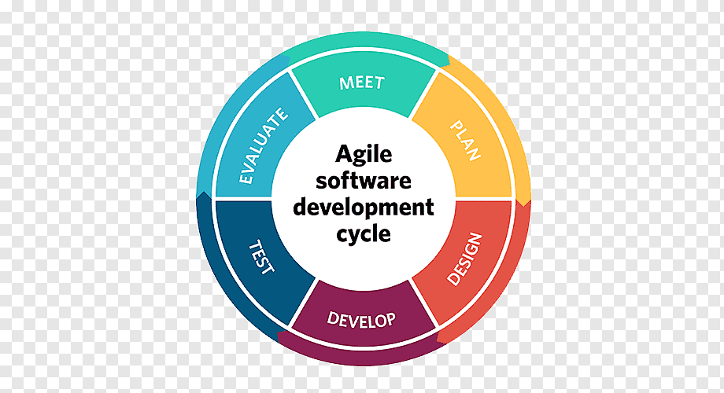
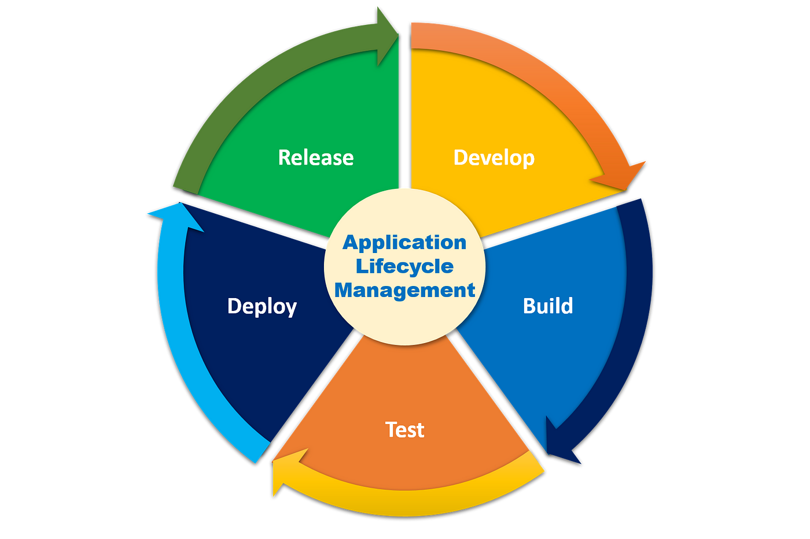
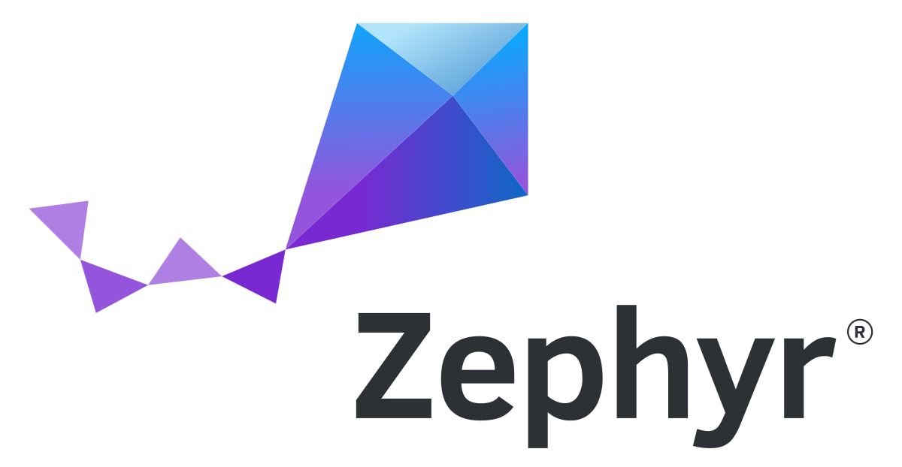
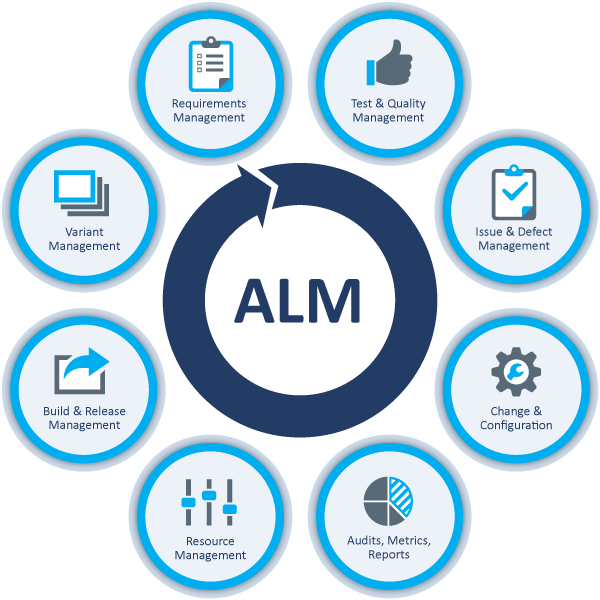

I am a passionate software engineer and senior analyst from Chennai, INDIA, who strives to leave an
indelible mark on the world in unconventional ways.
With three years and seven months of experience, I worked on a variety of R&D project teams. Designed,
built, and deployed database and user interface applications. I worked extensively with CASE technologies,
such as requirements analysis and software design tools. Always enthusiastic about learning and implementing
new technology.
Workplace technologies
Informatica
A tool for developing, configuring, and deploying data integration mappings.
Oracle DB & My SQL
Tools for managing enterprise grid computing, database workloads and data warehousing.
Python
Python is used to automate API interactions through various libraries.
Facets
It is used to process claims and billings for the healthcare sector before proceeding to manual testing.

Agile Methodology
It is a project management technique that divides the project into phases and stresses constant collaboration and improvement.
Java Selenium
Selenium is an open-source automated testing tool that tests web applications across several browsers.
Utilized technologies

ALM
Application Lifecycle Management assists development and testing teams in planning and implementing their project strategy.

Zephyr
Zephyr is a testing solution that manages and monitors end-to-end testing, helping to enhance software quality.
Its primary capabilities include test case building. Tests are organized by product release and component.
HTML
HTML is a programming language that is used to
represent text, define visual format, provide page
context to search engines, and other functions.
CSS
Cascading Style Sheets is used to specify styles for web pages, such as their design,
layout, and display variants for different devices and screen sizes.

ALM
Application Lifecycle Management assists development and testing teams in planning and implementing their project strategy.
Client
Resume
Education
IU International university of applied science
2024 — current
The MBA in IT Management course includes topics such as Leadership, Strategic Management, Business Ethics and Corporate Governance, IT Project and Architecture Management, and Performance Measurement.
This will help me progress further in life.
University of Madras
2021 — 2022
I completed the Masters in Computer Application course with an 82.6 percent.
This enabled me to master advanced technological programs during my study years.
Guru Nanak College of Arts And Science
2017 — 2020
I completed the Bachelor of Science program in specialization with a computer science course and received an 85.6 percent.
During that time, I competed in numerous events and won over 30 of them.
I was also recognized vice president during my course.
Experience
Software Engineering Senior Analyst
JANUARY 2023 — MARCH 2024
Cigna Healthcare Solutions India offered me a position as a software engineering senior analyst.
Starting with development, I excelled in all areas, including automation testing, manual testing, and data analysis.
I decided to pursue an MBA with the intention of improving my managerial skills.
Assistant Systems Engineer
AUGUST 2020 — JANUARY 2023
I started my career as an Assistant Systems Engineer at Tata Consultancy Service Limited.
Aside from my role, I have been working as a full stack developer for my client.
Because of my performance, they hired me for a higher-level position in their organization.